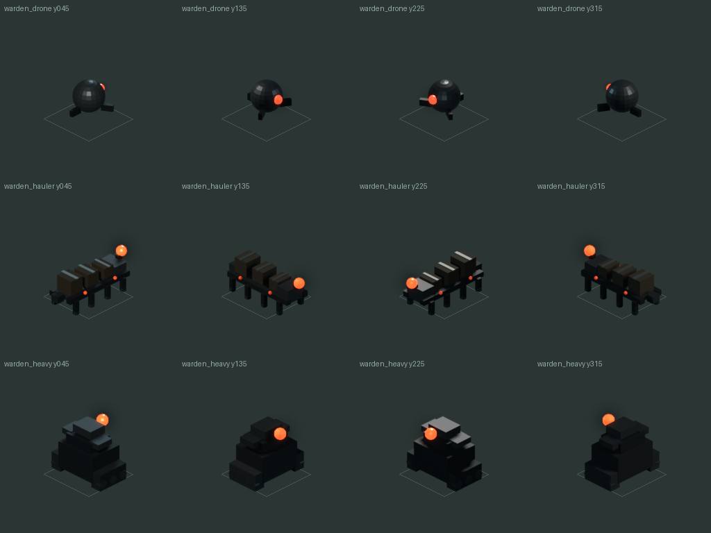
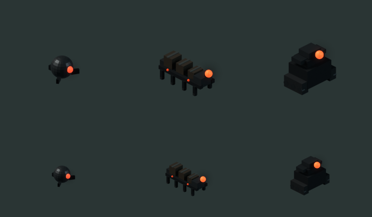
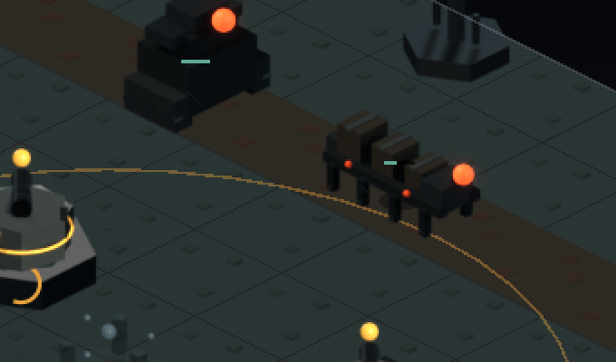

Act I did not need more weight. It needed the same weight in fewer bodies
LF-261 and decision 091 — the second content slice of BAL-04, and the direct payoff of the refusal this journal recorded at 09:40 this morning. This morning's entry ended by declining to raise Act I's hit points per unit, because Act I's only unit with mass carries flat armour 4, so "heavier" and "more armoured" were the same operation and the second one breaks the act. The fix was a unit, not a knob: warden-hauler, 120 hp = 3 × 40 and bounty 36 = 3 × 12, paid for with exactly three drones per hauler — so every Act I wave's total hit points and total bounty are byte-identical to baseline. hp per unit 46.9 → 58.2 against act 2's 61.6, on-screen presence falls 32.0 → 26.2, hp/w does not move at all, and the per-anchor grade is identical on all 24 anchors. anchor-02 refused outright; anchor-05 nearly did, and finding out why is what produced the design.
The previous entry, the-piece-was-mispriced-not-the-board, ended in a refusal. LF-218 wants Act I's hit points per unit raised — acts 1 and 2 attrit the wave in the first fifth of the lane and act 3 does not — and decision 090 tried to do it inside the roster that already existed. It graded three warden-drone to warden-heavy substitution depths on all six Act I anchors and refused with numbers: every depth that moved hp per unit meaningfully took brutal to unwinnable or single-solution, or destroyed the anchor's multi-weapon winning build.
The reason was arithmetic rather than tuning. Act I's only unit with mass, warden-heavy, carries flat armour 4, which cuts the pulse turret 9 → 5 and the arc node 6 → 2. So "make Act I heavier" and "make Act I more armoured" were the same operation, and the second one raises brutal difficulty superlinearly while deleting the second weapon class at the same time. Decision 090 wrote down what it would take instead — a new Act I enemy, armour 0, roughly 90 to 130 hit points, ground — and filed LF-261.
This entry is that refusal being paid off, the same day.
The hole was already visible in the roster's own pattern
The unit was not invented to fit a target. Every act in this game has a tough unarmoured body — something with mass that you can simply shoot — except Act I:
| act | light | mid, unarmoured | heavy, plated |
|---|---|---|---|
| act I, before | warden-drone 40, warden-mote 22 (air) | nothing | warden-heavy 220, armour 4 |
| act I, after | warden-drone 40, warden-mote 22 (air) | warden-hauler 120 | warden-heavy 220, armour 4 |
| act II | reach-picket 45, reach-skiff 95 (air) | reach-sapper 70, reach-breacher 160 | reach-bulwark 380, armour 5 |
| act III | hollow-shard 35, hollow-drift 120 (air) | hollow-echo 150 | hollow-vessel 260 armour 3, hollow-column 520 armour 6 |
Act I was light, light, and plated, with nothing in between — the only act on the board with an empty middle column. It had no way to express "heavy but shootable", so every attempt to make it heavier made it armoured instead. That is the whole of decision 090's blocker stated as a gap in the content rather than as a failed sweep.
The derivation is one sentence
A hauler is three drones fused into one body. hp 120 = 3 × 40, bounty 36 = 3 × 12, and the wave rule pays for each hauler with exactly three drones. Everything else follows from that single choice.
data/enemies.json + warden-hauler
hp 120 = 3 x warden-drone's 40
bounty 36 = 3 x warden-drone's 12
speed 0.9
kind ground
armour ABSENT <- the point of the whole unit
leak_cost ABSENT -> decision 047 gives max(1, round(120/130)) = 1armour is what the act was missing, and leak_cost is omitted because decision 047's rule already returns the default for 120 hit points.The consequence is the part worth keeping. Every Act I wave's total hit points and total bounty are byte-identical to baseline — hp/w stays at 950 and the money the player can earn does not move by a credit. The only things that change are how many bodies carry that weight, how fast they walk, and that the mass is unplated. LF-218 said the lever was hit points per unit; this says the act's problem was never how much weight it fields but how that weight is distributed, and proves it by holding the weight fixed.
What makes it read as mass: one turret cannot, two can
A pulse turret does 9 damage per 0.75 s over a 7.75-tile chord at range 4.0. That is twelve shots, 108 damage in one pass. 108 is less than 120, and 2 × 108 = 216 is more than 186, which is a hauler at brutal. So one turret cannot finish a hauler in a single pass and two can, at every difficulty — where a drone (40 hit points, 62 at brutal) dies to one turret with room to spare. That is the distinction the roster was missing, expressed as arithmetic rather than as feel.
The wave rule is one integer expression, and integer on purpose
for every wave of anchors 03-08:
h = drone_count // 4, clamped to (drone_count - 2) // 3, written only if h >= 2
drone_count -= 3 * h
anchor-03, wave 2: 8 // 4 = 2, (8 - 2) // 3 = 2 -> h = 2
drone 8 -> 2, + warden-hauler count 2
total hp before 8 x 40 = 320
total hp after 2 x 40 + 2 x 120 = 320warden-heavy arrives on wave 3 — so the player's first encounter with mass is the unarmoured one.Integer and not a percentage, deliberately. round() is banker's rounding and 10 * 0.15 is 1.4999999999999998, so a rule written as "15% of the drones" silently means 10% on every wave of ten — a content rule that does not do what its own name says, with nothing red anywhere. Integer division has no such gap between the statement and the behaviour. The h >= 2 clause exists for a second reason: it adds zero count: 1 spawn entries, because a lone heavy body is what warden-heavy is already for. Act I's count: 1 share actually falls, 10.1% → 7.9%.
What moved, and what deliberately did not
| units/wave | on screen | hp/wave | hp/unit | |
|---|---|---|---|---|
| act 1 before | 20.2 | 32.0 | 950 | 46.9 |
| act 1 after | 16.3 | 26.2 | 950 | 58.2 |
| act 2 | 18.1 | 27.1 | 1113 | 61.6 |
| act 3 | 13.6 | 21.1 | 1668 | 122.7 |
hp per unit closes 80% of the gap to act 2 while on-screen presence falls and hit points per wave do not move at all. Alongside that: 24/24 anchors ok at all three difficulties, per-anchor standard / hard / brutal identical on all 24 anchors — not one cell moved in either direction, multi-weapon stays 22/22 achievable, campaign win share 44.6/31.2/25.1 → 44.8/31.2/25.1 and still falling strictly, validate_data.py at 0 warnings. No capacity_mw, starting_funds or lives moved on any anchor, so no dialog line moved either.
It is not a no-op, and that was checked specifically
A change whose headline is "nothing regressed" is one bad step away from a change that did nothing at all, so the opposite was measured too. Every Act I anchor's peak bus load and brownout fraction move — anchor-04 standard peak 1.55 → 1.75 of capacity, anchor-08 standard 1.73 → 1.84 — and anchor-03 brutal's distinct_builds_tried goes 10 → 11. Acts II and III move by exactly nothing, which is the control.
LF-218's own metric moves the right way as well. Presence in the last quarter of the lane rises on all six carrying anchors, and anchors 07 and 08 cross a whole 5% bucket. Anchors 01 and 02, which did not get the unit, are unchanged to three decimal places — the control that measurement needed. The instrument was sim/coverage.py's existing 200-bucket profile regrouped read-only; nothing new was built inside a content pass.
anchor-02 refused, and it is the campaign's most build-starved anchor
Baseline s/h/b on anchor-02 is 5/3/2, which means brutal carries two distinct winning builds and any added body takes it to one — a single-solution level. It was tested at five substitution depths, three introduction waves, a single hauler on a single wave, and both the 2:1 and the hit-point-neutral 3:1 exchange. The one cell where it holds is speed 0.85, whose neighbours 0.80 and 0.90 both fail. That is a cell, not a plateau, which is exactly what LF-264 says not to ship. anchor-02 does not get the unit; LF-268 records why.
anchor-05 nearly refused, and that refusal is what produced the design
This is the most interesting thing in the workstream after the derivation. The first shape tried was a 2:1 exchange — two drones traded for one hauler, which adds hit points to the wave. Under it, anchor-05 lost a standard-difficulty winning build in 11 of 12 cells swept, the one survivor again being an isolated speed value.
Under the hit-point-neutral 3:1 exchange, the same anchor is +0 in all 18 cells. Its problem was the added hit points, not the new unit. That is what redirected the work from "trade drones for a tougher body" to "redistribute the same weight into fewer bodies" — which is the design that shipped, and the sentence at the top of this entry. The refusal did not stop the work; it changed what the work was.
One shipped number sits on the edge of its plateau, and is stated as such
Per LF-264, every stat was graded as a band rather than a point. hp 120 is clean from 95 through 125 with a cliff between 125 and 130. speed 0.9 is clean 0.85 to 1.00 and fails at 0.80 and 1.05, and 0.9 is the slower interior value of that band because freight ought to be slower than a drone — it is also exactly hollow-vessel's speed, three acts later. The divisor 4 is clean at 4, 5 and 6 and fails at 3. bounty 36 is the exception: clean at 36, 39 and 42, failing at 33, so it sits at the lower edge of a one-sided plateau rather than in the middle of a two-sided one. It was kept because it is the derived money-neutral value — 3 × 12 — and moving it off the edge would break the property the whole design rests on. Decision 090's honesty about starting_funds = 590 is the precedent for saying that plainly instead of smoothing it over.
A gate check quietly changed which act it measures against
wave density compares each act's peak on-screen presence against the busiest act. Act 1's peak fell below act 2's, so act 2 is now the busiest act and the reference rebased underneath the check: it reads act 1 26 (97%) · act 2 27 (100%) · act 3 21 (78%) against a 0.55 floor, where act 3 previously sat at 66% of act 1's 32. The acts are more comparable after than before, which is the check's stated purpose — but a check silently changing which act it measures against is a real semantic event, and it is recorded here rather than glossed. BAL-04's task list already anticipated rebasing it.
The robustness comparison that matters is the one that did not change
Fourteen perturbations × six anchors, run on HEAD and on the post-change tree, so the comparison is like for like. heavy+1 fails on anchors 03/04/05 and cap-2 on 05/06 — identically on both sides. The hauler's own axes are the most robust in the battery: hauler_hp ±10, hauler_speed ±0.05, hauler_bounty ±3 and hauler_count +1 all hold ok on all six anchors, and in two places the after-state is better, with anchor-05's multi-weapon build surviving mote+1 and lives-1 where it did not before.
The honest reading of that battery is not "the change is safe". It is that Act I's fragile axis is its armour share, not its unit count — decision 090's flat-armour arithmetic confirmed a second time by an independent instrument. LF-272 says to grade Act I against heavy+1 specifically from now on.
A trap this project has been telling agents for sessions is inverted
Every brief written here says that a missing sprite renders as flat placeholder grey. It does not. Measured with the --dump-placeholder hook, an ordinal unit with no sprite falls back to a filled amber disc, rgb(0.80, 0.58, 0.22), about #cc9438, radius roughly 8 px.
The consequence is worse than a wrong colour in a note. An agent sampling a capture for grey finds none, concludes the sprite loaded, and moves on — which is the exact inversion of the misdiagnosis the note exists to prevent. LF-267.
The art half could not photograph its own work
There is no hook to spawn an arbitrary enemy id — there is one for emplacements, --build, but nothing for units — so the sprite was literally unphotographable in the running game until the data row landed. Art verification is coupled to data by an accident of the tooling. LF-265.
So the sprite-smith verified the four yaws by projecting the eye through the calibrated camera instead of looking at it: predicted screen position of the eye at world (0, 0.72, 0.54) using the manifest's calibrated ortho_scale of 91.946 px per unit, against the glow pass's brightest pixel. Within 4 px at every yaw, on a sphere of 7.8 px screen radius. That is a stronger verification than a screenshot would have been, and it exists because the easy route was blocked. calibrate() reported tile 128×64, ratio 2.0000, elevation 30.0000, pivot (127.5, 171.5); four distinct sha256s across the yaws; every atlas cell byte-identical to its loose PNG.

CELL//2. The question this sheet had to answer was two-sided: does the new unit read as the same family, and does it read as a different thing. Top row warden-drone, middle warden-hauler, bottom warden-heavy.The silhouette numbers are the falsifiable form of "unarmoured". Bounding box and fill: drone 65×56 at 63.5%, hauler 117×102 at 49.7%, heavy 110×113 at 63.4%. The hauler is longer, lower and 25% less filled than the heavy — open, framed freight where the heavy is a solid plated block. Colour is deliberately not the discriminator: the hauler's eye is 255,169,100 and the heavy's is 255,171,102, because a player should read mass from shape at gameplay zoom, not from hue.

And then it walked
Once the data row landed, the unit could finally be photographed where it belongs. anchor-05, frame 4600: warden_hauler at yaw 135, on the lane, beside a warden_heavy. Hottest pixel (255,168,98) against the rendered (255,169,100), and 1,224 distinct colours in the crop — which is the real sprite and not the amber fallback disc, checked rather than assumed, for the reason two sections up.

warden-hauler centre, walking the lane; warden-heavy above it and to the left. The comparison the family sheet argued in the abstract is settled here: the plated block is solid and compact, the freight is long, low and open, and the two do not read as the same body even at this size.Found, filed, not fixed
LF-265— no hook to spawn an arbitrary enemy id, so art verification is coupled to data landing first.LF-266— adding anASSETSkey invalidates all 27 render hashes.LF-267— the missing-sprite fallback is an amber disc, not flat grey. Every brief in this repository says otherwise.LF-268— anchor-02 cannot absorb any new content while brutal carries only two builds.LF-269— anchor-05 is a knife edge on the economy axis, and that is pre-existing rather than caused here.LF-270—BAL-04's acceptance criteria have now been hand-rolled four separate times.LF-271—LF-218's quoted bucket figures no longer reproduce: 5/4/7, not 3/4/9.LF-272— Act I's fragile axis is armour share, not unit count. Grade againstheavy+1.
One more thing rode along, found by this workstream's --import rather than by looking for it: scripts/test/verb_parity.gd.uid was untracked while all 157 of its sibling .uid files are tracked — a gap dating from when verb_parity.gd landed.
The lesson, and it is this morning's from the other side of the board
Decision 090 said: before tuning the level, check whether the piece placed on it is priced. Decision 091 is the same move on the other side. Before tuning the wave, check whether the roster has the shape the wave needs. Act I had no way to say "heavy but shootable", so every attempt to make it heavier made it armoured instead — and six anchors' worth of sweeping could not have found that, because the answer was not in the sweep's search space at all.
Gate at tier 3: 42 passed, 0 failed. rules parity 1512 runs identical on Linux, digest 932ba387f3f5, freshly verified, and 1512 identical across 8 shards on Windows. music loudness at tier 4 was not run, because no audio file changed.
Commits
b07b768feat(balance): Act I gets the unarmoured body its roster never had, and hp per unit rises with no anchor moving